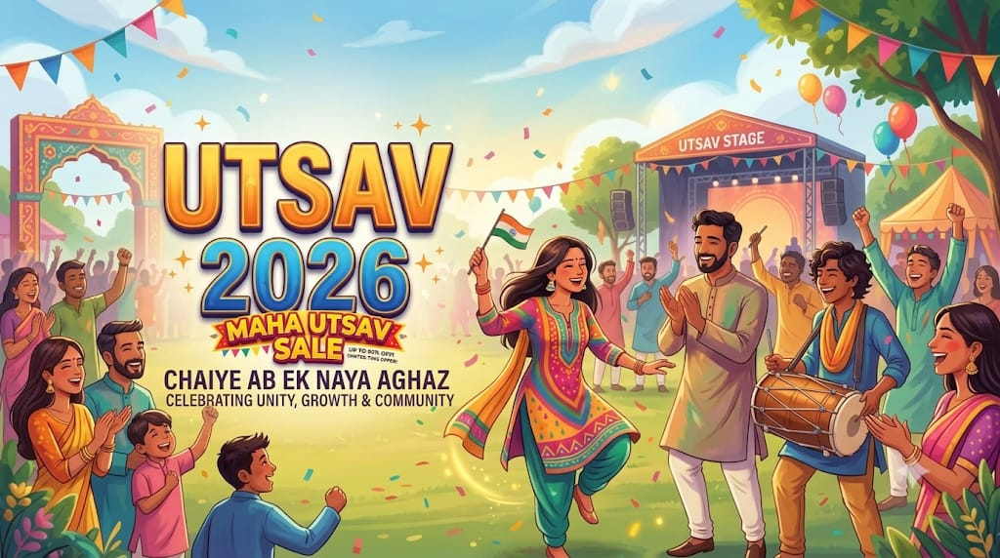

Eureka! is conducted by the Entrepreneurship Cell (E-Cell) of IIT Bombay (not IIIT Bombay). Recognized by CNN and Thomson Reuters as Asia’s largest business model competition, it is designed to take startups from an initial concept to a validated, scalable, and venture-funded business.
1. Eligibility Criteria
- Open to Everyone: Open to undergraduate/postgraduate college students, researchers, working professionals, and early-stage startup founders.
- Team Size: 1 to 7 members (solo participants are welcome).
- Startup Stage: Both idea-stage concepts and early-stage incorporated ventures are eligible.
- Domains & Tracks: Sector-agnostic. Tracks typically include:
- Business Track: General commercial startups across tech, fintech, D2C, SaaS, etc.
- Social Track: Ventures addressing critical societal, healthcare, or environmental challenges.
- Deeptech / Climate / Fintech Tracks: Sponsored specialized verticals tailored to specific sectors.
- Registration Fee: Completely free of charge.
2. Competition Stages & Selection Process
* Phase 1 — Registration & Business Model Questionnaire:
- * Teams register through the official E-Cell IIT Bombay portal.
- * Participants submit an initial pitch questionnaire covering the core problem, unique value proposition, target customer segment, TAM/SAM/SOM market estimates, and unit economics.
* Phase 2 — Mentorship & Intermediate Pitching:
- * Shortlisted startups are paired 1-on-1 with dedicated startup mentors and industry veterans.
- * Teams refine their pitch decks, run through mock pitch rounds, and participate in zonal/virtual screening panels.
* Phase 3 — Semi-Finals (Venture Capital Pitching):
- * Top-performing teams pitch directly to partner VC firms, angel networks, and serial entrepreneurs for qualification to the final round.
* Phase 4 — Grand Finale & Demo Day:
- * Held offline at the IIT Bombay campus during the annual E-Summit.
- * Finalists pitch on stage before a high-profile jury of prominent investors, venture partners, and incubator heads.
3. Key Incentives & Perks
- * Cash Grants & Prize Pool: Equity-free cash prizes (typically exceeding ₹25–30 Lakhs) alongside a broader prize pool valued at over ₹2 Crores in total services and perks.
- * Incubation Access: Fast-track evaluation and incubation opportunities with premier partners like SINE (IIT Bombay) and leading university incubators.
- * Tech Stack & Business Credits: Extended credits from major tech partners including AWS, Google Cloud, Razorpay, and Microsoft for Startups, alongside complimentary legal and auditing advisory.
- * Global Exposure: Select winners and top student tracks regularly receive fully sponsored trips to represent their startups at international pitch platforms (e.g., Dubai, Singapore, and Silicon Valley delegations).
4. Typical Annual Timeline
- * Registrations Open: July
- * Questionnaire Deadline: Late August / Early September
- * Mentorship & Evaluation: September October
- * VC Pitching & Semi-Finals: November
- * Grand Finale / E-Summit: December / January